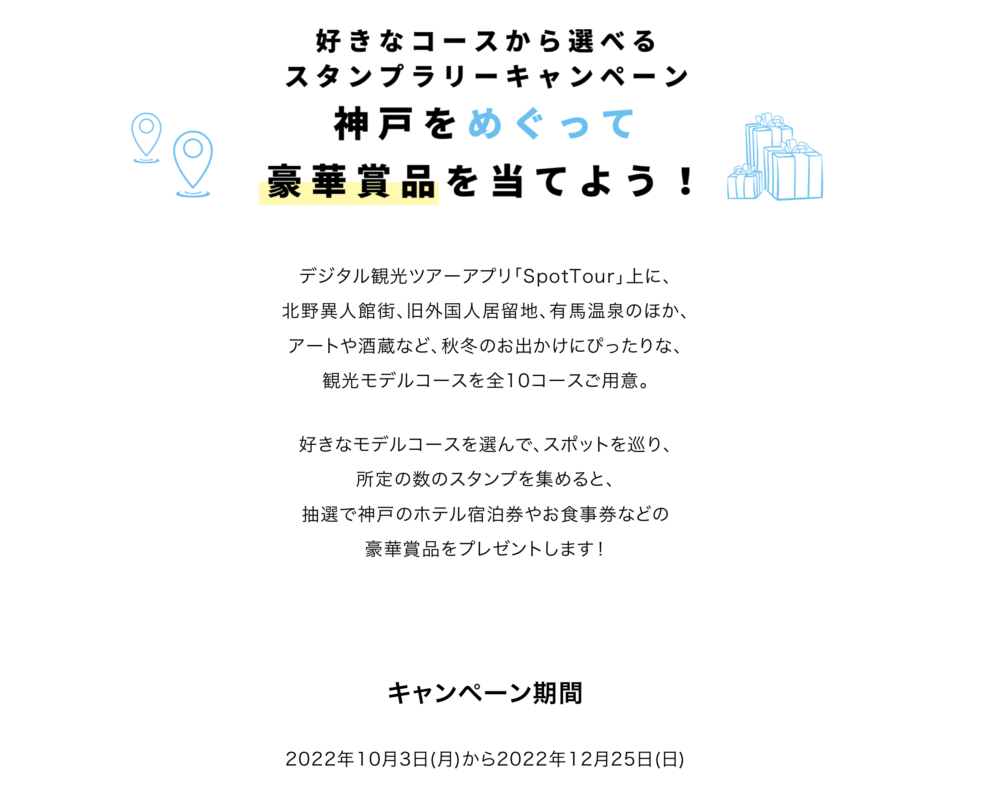
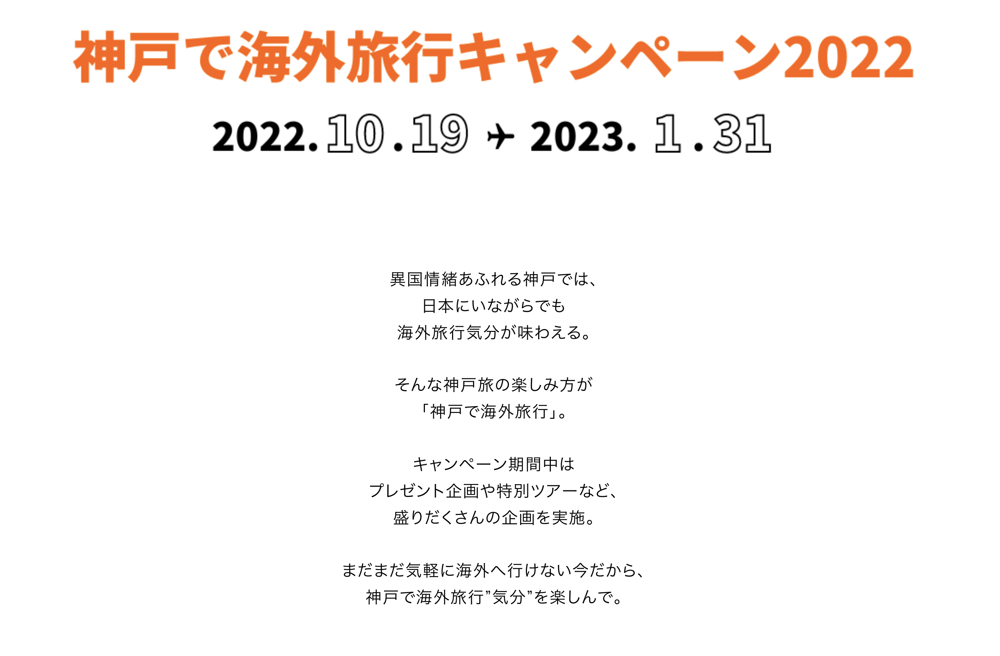
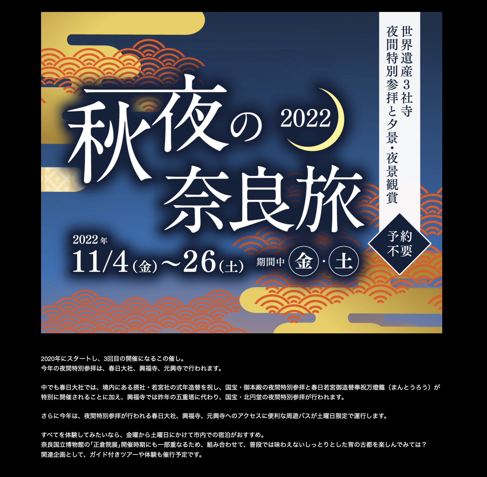
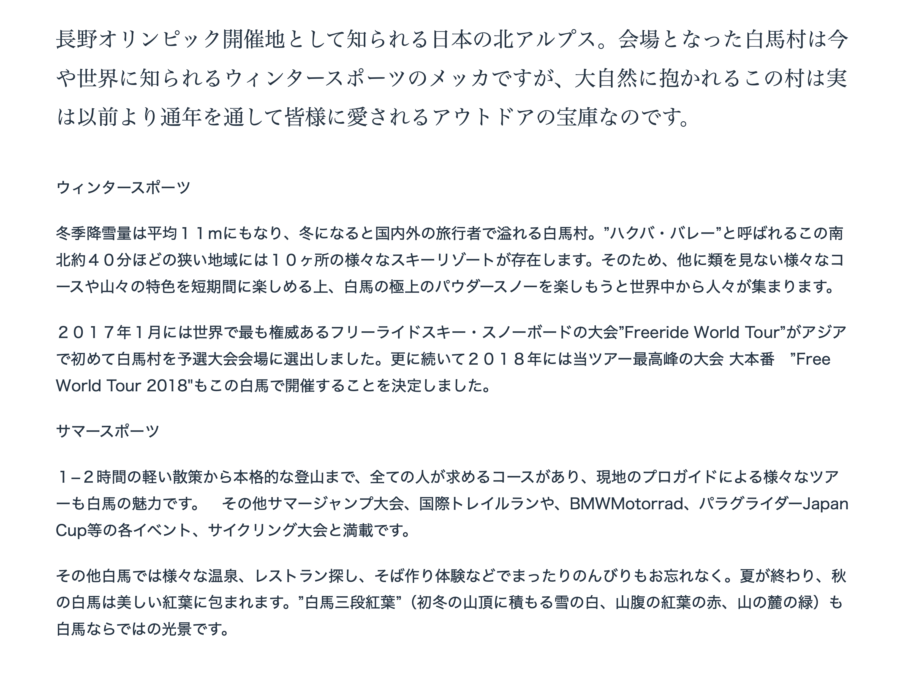
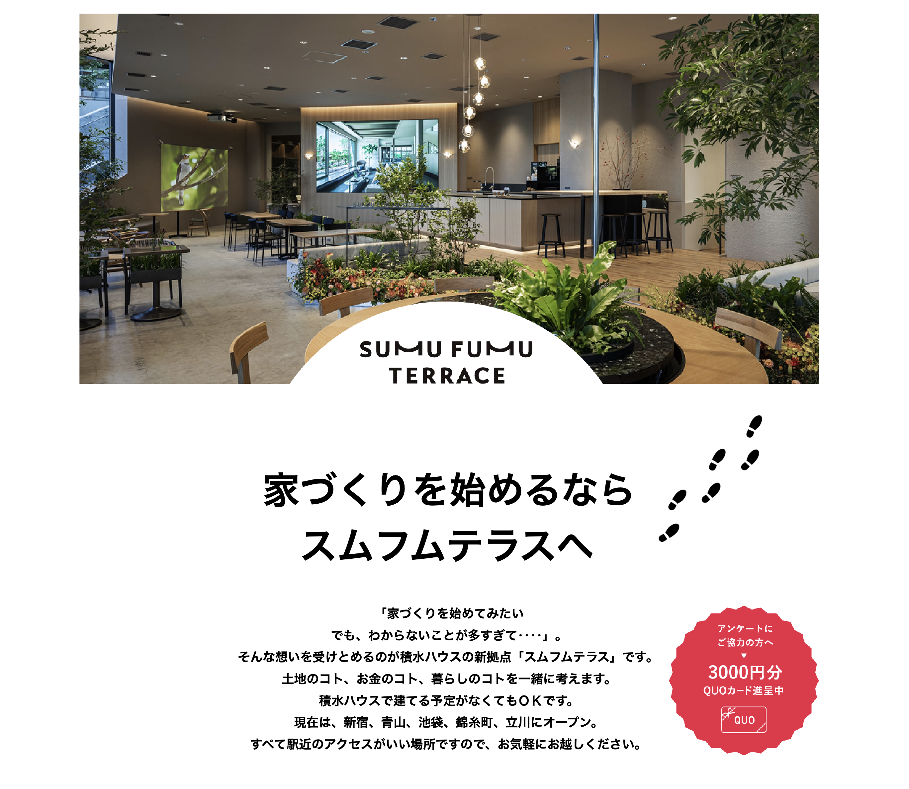

検討


Structure.Analysis
AN.01: Disection
Concept
Disection: Study in great detail each elements and the type, class, its pattern and relation of clauses and sentences to understand better the meaning and context.
Class
① Nominal ・Class
Ends with a Noun
・彼女のお父さんは有名な医者です.
・Her father is a famous doctor.
② Adjectival ・Class
Ends with Adjectives
・食べ物はとても安く美味しいです.
・Food is very cheap and tasty.
③ Verbal ・Class
Ends with Verbs
・彼らは近代の複雑な社会に住んでいます.
・They live in a modern, complex society.
Style
① Style ・Construction
Determines the complexity of the sentence.
・Simple：Include one main clause.
・Conjoined: Includes two independent clause.
・Complex：Includes a main clause and at least one
subordinate clause.
② Types ・Construction
Determines the process on how the information is being conveyed
upon.
Gives an information on how the clauses should behave or set within the
sentence.
・Declarative：Describe and provides meaning.
・Imperative: Gives some command or instructions.
・Conditional：Set up conditions either hypothetical or
factual.
・Interrogative：For asking questions.
③ Function ・Construction
Usual pattern or style of a sentence depending on the function intended
to carry out or perform.
・Prohibition：Usual pattern or style to prohibit
someone to do.
・Suggestion: Usual pattern or style to form a
suggestion.
・Permission：Usual pattern or style to give or ask a
permission.
・Request：Usual pattern or style for requesting
something.
Pattern
① Particles ・Indicator
Attached to necessary elements of the sentence to indicate it’s
grammatical role and function.
・は：Indicates the topic.
Emphasize the statement after the particle.
・が：Indicates the subject. Emphasize
the subject itself.
・を：Indicates the direct object.
Where the action is directed upon. Indicates also the place of
passage and the starting point.
・に：Indicates the place of existence or where
it is situated. Indicates a point in time,
destination, indirect object,
source and purpose.
・で：Indicates the where the action takes
place. Indicates a reason or cause,
means, time of a change state,
materials, cost and
amount.
② Phrasal Particles ・Pattern agreement
Particles in combination with nouns and verbs.
・General Structure:
・⚭ Prt. + Vte・Vnn-stem・Vru
・に関して・に関し・に関する
・⚭ Prt. + Noun + Prt.
・のために・を中心に
・⚭ Noun + Prt.
・次第で・上で・抜きで
Modifier: Pre-Nominal Form
⚭ Noun・Verb + Phrasal Particle + Noun
・コンピュータに関する彼の知識は相当なものだ.
・His knowledge of computers is quite impressive.
Modifier: Pre-Verbal Form
⚭ Noun・Verb + Phrasal Particle + Verb
・人は年を取るにつれて記憶力が衰える.
・Memory declines as people get older.
③ Mode ・Mode of the sentence
Change at the end of the sentence to provide nuances or
slightly change the meaning of the sentences.
・きっとそれなりの理由があったはずだ.
・Surely there must have been a good reason.
④ Co-Occurrence ・Pattern agreement
Adverbials must be in agreement with
mode of the sentence so it will be deem as valid or not
vague or may not sound strange.
Follows the correct grammatical patterns.
・この関数は決して使用すべきではない.
・This function should never be used.
Relation
・① Clause-to-Clause Relation: ・Connection
・Understanding the relation of clauses of the sentences provides the
whole context and meaning of the sentence.
・Equal：Indicates that clauses are on the same
page.
・Not Equal ：Indicates that clauses are not on the
same page.
・Opposite：Indicates that clauses are on opposite
meaning.
・Cause-Effect ：Indicates that first clause is the
cause for effect in the second clause.
・Reason-Result ：Indicates that first clause is the
reason why the second clause happens.
・State-Effect ：Indicates that the state of first
clause have an effect on the second clause.
・Conditional ：Indicates that the first clause sets a
condition while the second clause states the consequence.
・Temporal ：Indicates that the first and second clause
are bound by time relation.
❖ Equal Relation: ・Equal
同じ関係：Ⓐ = Ⓑ
・管理者権限が必要ですた.
・Administrative privileges are required.
❖ Not Equal : ・Not Equal
相対関係：Ⓐ ≠ Ⓑ
・この問題は見かけほど難しくない.
・This problem is not as difficult as it appears.
❖ Clause-to-Clause Relation: ・Opposite
相対関係：Ⓐ ⬌ Ⓑ
・それを聞いて複雑な気持ちになった.
・Hearing it aroused mixed feelings in me.
❖ Clause-to-Clause Relation: ・Cause-Effect
原因結果関係：Ⓐ ⇢ Ⓑ
・ある程度覚えているからこそ出来るペースでもある.
・It is also a pace that I can do because I remember some of it.
❖ Clause-to-Clause Relation: ・Reason-Result
理由結果関係：Ⓐ ⇢ Ⓑ
・アカウントの制限によってログオンできません.
・Unable to log on due to account restrictions.
❖ Clause-to-Clause Relation: ・State-Effect
状態結果関係：Ⓐ ⇢ Ⓑ
・問題解決に要する時間が短くなるほど生産性が増大します.
・The less time it takes to solve a problem, the more productivity
increases.
❖ Clause-to-Clause Relation: ・Conditional
条件的な関係：Ⓐ ⇢ Ⓑ
・状況が変わったら知らせてください.
・Let me know if things change.
❖ Clause-to-Clause Relation: ・Temporal
時間的な関係：Ⓐ ⇢ Ⓑ
・カメラを切り離す前にファイルシステムをマウント解除します.
・Dismount the file system before disconnecting the camera.
② Conjunctive Particles ・Connection
Understanding the relation of clauses of a sentence provides the whole
context and meaning of the sentence.
・Inter-Relation：Appropriate conjunction particle
depending on the clause-to-clause relation.
・❖ tsutsu：Express simultaneous action perform by the
same agent. Imply also some contrast.
・❖ uchi ni：Express simultaneous state or action with
uncertain period.
・❖ aida ni：Express that an event could occur while in
a given period.
・❖ mae ni：Express that an event happens before the
other one.
・❖ ato de：Express that an event could happen in a
later time.
・❖ toki ni：Express a point in time that an event or
an experience happens or that happened.
③ Conjunctions ・Connection
Understanding the relation of the sentences provides the whole context
and meaning of the sentence.
・Relation：Relation between sentences.
・❖ demo：Express an opposite state, action or an
idea.
・❖ shikashi：Express an opposite state, action or an
idea.
・❖ sonoueni：Express an additional information of
state, action or an idea.
・❖ sonokekka：Express the result of previous
circumstance or situation.
AN.02: Elements
Concept
Pattern: Understand the pattern for which you could determine which better grammatical element best fits that yield the correct meaning or context.
Pattern
① ___うちに、聞いたことをメモしておいた方がいい。
・a. 忘れる b. 忘れない c. 忘れている
・①
忘れないうちに、聞いたことをメモしておいた方がいい.
・wasureru uchi ni. - While you forget.
・wasurenai uchi ni. - While you don’t forget.
・wasureteiru uchi ni. - While forgetting.
② ちょうどメールを描いている___本人が来た。
・a. までに b. 間 c. ところに
・②
ちょうどメールを描いているところに本人が来た
・made ni. - Up to. Sort of a deadline.
・aida. - While. Throughout the whole period.
・tokoro ni. - At the time of. teiru: In the midst of
doing.
③ 音楽の先生との出会い___、ピアノを習いはじめました。
・a. であるため b. のせいで c. をきっかけに d. 以来
・③
音楽の先生との出会いをきっかけに、ピアノを習いはじめました。
・de aru tame. - Because of. Not suited. Neither
unusual or uncontrollable.
・no sei de. - Because of. Not suited. Outcome expected
to be bad.
・wo kikkake ni. - Because of. Suited. It is chance or
an opportunity or it is a trigger for following action.
・irai. - Ever Since. Not suited. Outcome should be
done continuously or repeatedly.
Usage
AN.03: Formulae
Concept
Syntax: Understand the syntax in order to construct the sentence in correct order.
Syntax
Skill.Competence
EV1.0: Reading
Concept
Reading Skills: Learning the phonological sounds of letter, symbol, character or scripts are essential for reading.
Tecniques
Scanning
Scanning:
Skimming
Skimming:
Comparison
Scanning vs Skimming:
Materials
01
02
03
04
05
06
07
08
09
10
11
12
13
14
15
16
17
18
19
20
21
22
23
24
25
26
27
28
29
30
31
32
33
34
35
36
37
38
Cut-Outs
01

Win gorgeous prizes by touring Kobe! Digital Stamp Rally Campaign with multiple model courses to choose from!
The digital sightseeing tour application "SpotTour" is now running a digital stamp rally campaign.
In addition to the Kitano Ijinkan-gai, the Old Foreign Settlement, and Arima Onsen
and Arima Onsen, as well as art and sake breweries.
A total of 10 model sightseeing courses are available.
Choose your favorite model course, visit the spots, and collect the stamps.
If you collect a predetermined number of stamps, you will be entered into a drawing for a
you will be entered into a drawing to win luxurious prizes such as hotel vouchers and meal coupons in Kobe!
and you will be eligible to win luxurious prizes such as hotel coupons and meal coupons in Kobe!
Campaign period
October 3, 2022 (Monday) to December 25, 2022 (Sunday)02

In the exotic city of Kobe
You can feel like you are traveling abroad even in Japan.
you can feel as if you are traveling abroad.
The way to enjoy such a trip to Kobe is to "Travel Abroad in Kobe
Kobe is a great place to travel abroad.
During the campaign period
We will be offering a variety of special tours and
and special tours.
Since it is still too late to go abroad, enjoy the "overseas travel feeling" in Kobe.
Enjoy the "overseas travel" feeling in Kobe.03

This event will be held for the third time since its start in 2020.
This year's special nighttime visit will be held at Kasuga-taisha Shrine, Kofuku-ji Temple, and Ganko-ji Temple.
In addition, Kofuku-ji Temple will hold a special nighttime visit to its national treasure, Kitaendo, in place of last year's five-story pagoda.
In addition, this year, a special tour bus will be available on Saturdays only to provide convenient access to Kasuga Taisha Shrine, Kofuku-ji Temple, and Ganko-ji Temple, where special nighttime visits will be held.
If you want to experience it all, we recommend staying in the city from Friday to Saturday.
Since the tour partly coincides with the opening of the "Shosoin Exhibition" at the Nara National Museum, why not combine the two and enjoy the ancient capital in a quiet evening that you cannot usually experience?
Guided tours and hands-on experiences will be offered as related events.04

Japan's Northern Alps are known as the site of the Nagano Olympics. Hakuba Village, the venue of the Olympics, is now a world-renowned mecca for winter sports, but this village, surrounded by nature, has actually been a treasure trove of outdoor activities loved by people all year round for a long time.
Winter Sports
With an average winter snowfall of 11 meters, Hakuba Village is a popular destination for both domestic and international visitors during the winter. Hakuba Valley," a small area about 40 minutes north to south, is home to 10 different ski resorts. This means that in addition to enjoying an unparalleled variety of courses and mountain features in a short period of time, people from all over the world come to enjoy Hakuba's superb powder snow.
In January 2017, the Freeride World Tour, the world's most prestigious freeride ski and snowboard competition, selected Hakuba Village as the site of its qualifying competition for the first time in Asia. In 2018, the Freeride World Tour 2018 will be held in Hakuba, Japan.
Summer Sports
From light 1-2 hour walks to serious mountaineering, Hakuba has something for everyone, and a variety of tours led by professional local guides. There are also summer jumps, international trail runs, BMWMotorrad, paragliding Japan Cup events, and cycling competitions.
Don't forget to relax and enjoy Hakuba's many hot springs, restaurants, and soba (buckwheat noodle) making experiences. After the summer is over, Hakuba will be covered in beautiful autumn leaves." Hakuba's "three tiers of autumn leaves" (the white of the snow on the mountain tops in early winter, the red of the autumn leaves on the mountainside, and the green of the leaves at the foot of the mountain) are a unique sight in Hakuba.05

[Abashiri] A town where drift ice comes to 44 degrees north latitude
About 165 kilometers north of Kushiro, you will arrive at Abashiri City on the Sea of Okhotsk coast. Abashiri is a town of drift ice. In winter, drift ice appears offshore around January 20, and in February, it comes ashore and covers the Sea of Okhotsk with pure white ice. The sea of Abashiri is covered with ice until March, when the drift ice leaves the coast.
The home of drift ice is the sea northeast of Sakhalin, 1,000 kilometers away. The fresh water that flows into the Sea of Okhotsk from Russia's great river, the Amur River, freezes over, freezing the less salty water in the sea water as it travels southward to the coast of the Sea of Okhotsk in Hokkaido. The journey is very slow. It is the speed of a baby crawling. The ice on the coast is 40 to 60 cm thick and has a clear blue cross-section. Because it contains plenty of phytoplankton from the Amur River, the Sea of Okhotsk at dawn is rich in nutrients and seafood.
The fresh water of the Amur River, the cold winds of Siberia, and the closed shape of the Sea of Okhotsk. The Abashiri Okhotsk Drift Ice Festival is held on weekends in mid-February.06

If you want to start building a house
Visit Soumuhumu Terrace
I want to start building a house.
But there are so many things I don't understand...".
Sekisui House's new base "Smumfumu Terrace" is here to help you with such thoughts.
We will think about land, money, and living together.
It is OK even if you do not plan to build with Sekisui House.
Currently, we have openings in Shinjuku, Aoyama, Ikebukuro, Kinshicho, and Tachikawa.
All of them are located near stations for easy access, so please feel free to visit us.Sentences
EV2.0: Speaking
Concept
Having a voice: Holding a conversation depends on both the organs of speech and mental processing.
Read-ALoud
Translation
Shadowing
EV3.0: Listening
Concept
Listening and Hearing: Be able to listen and hear the words clearly is the way to mastery.
Talks
Snippets
Vlogs
Nihongo
News
Manga-Anime
Technical
Educational
Eikaiwa
Audio
Basic01
001
002
003
004
005
006
007
008
009
010
011
012
013
014
015
016
017
018
019
020
021
022
023
024
025
026
027
028
029
030
031
032
033
034
035
036
037
038
039
Basic02
001
002
003
004
019
020
021
022
023
024
Inter01
001
002
003
004
Inter02
001
002
003
004
005
011
012
013
014
015
016
017
018
019
020
021
022
023
024
025
026
027
Inter03
001
002
003
004
005
006
007
008
009
010
011
012
013
014
015
016
Inter04
001
002
003
004
005
006
007
008
009
010
011
012
013
014
015
016